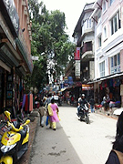
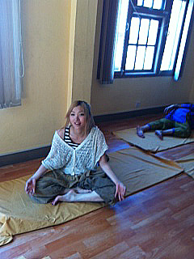
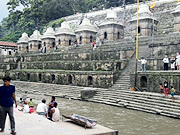

「無料ヨガクラスやボランティアができるので、参加しました。
英語の担当教師が大学教授だったため、平日は午後5～8時、祝日が午前7～11時というスケジュールになりました。
自分の予定に合わせてもらえると思っていたので残念でした。
一日だけ急な予定が入り、レッスンに行けませんでした。
ネパールでのホームステイは、カトマンズの一般家庭のリアルな事情を知れて刺激的でした。ホームステイ先の家族がとても親切で、フレンドリーで楽しかったです。みんな英語が上手いので、日常会話の向上につながったと思います。バスルームや自分の部屋も広く、綺麗で快適でした。
食事もおかずやカレーの種類が多いので2週間は大丈夫でした！
ゴーヤやオクラがたくさん使われてました。
この家はヒンドゥー教徒だったので、チキン、マトンが多く、毎回骨付き肉で食べにくかった…。
繁華街のタメルには日本料理店も4軒くらいありました。
一人で歩いているとよく声かけられます。

日本語教師ボランティアでは、9～11歳の子供達でも英語を理解できて堂々と話していました。みんな日本人の私と日本の写真に興味津々で、最後は握手攻めとサイン攻めに合いました（笑）
ボランティアを2週目の平日にやろうと思っていましたが、2週目から午前中はバスが走らないストライキが始まってしまったので、最初からやっていれば良かったと思いました。
ボランティアの場所がはっきりわからず不安だったけど、サポーターのプラタップさんが自分の希望通り動いてくれて良かったです。
ヨガクラスではネパール人の友達もできました。
先生は基本ネパール語で説明するけど、わからなそうな顔していたら英語で話してくれます。
ネパールに行く前は、もっと貧しくて、観光地では乞食がもっといるかと思ったけど、そこまでではなかったです。
人は多いし、バイクがたくさん走っていました。
ただ、思ったよりも停電が多く、夜の停電の中のレッスンは眠くなったし、大変でした…

これまで海外に行った中で、今回が一番滞在期間が長かったこともあってか、一番充実していました。個人旅行ではできない小学校でのボランティアやホームステイでの家族との交流、ヨガクラスは、初めてで、何もかも楽しかったです。一人で観光したので、いろんな出会いがあって、ネパール人の友達もたくさんでき、ネパール人とたくさん交流ができて良かったです。ネパール人の習慣がよくわかりました。
また絶対ネパールに行きたいです。次回は、旅行で行きたいと思います。」
